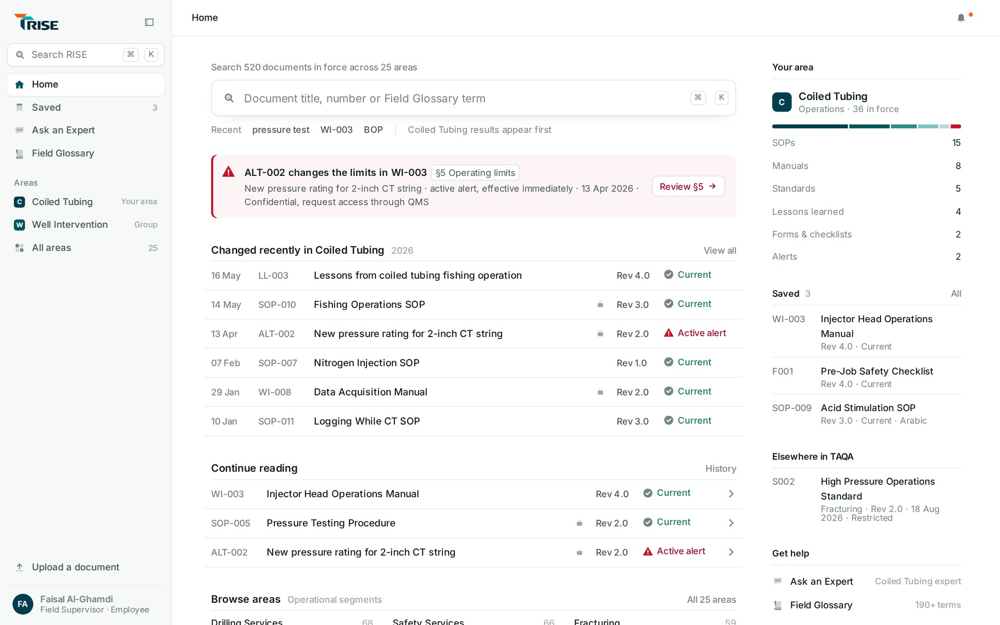
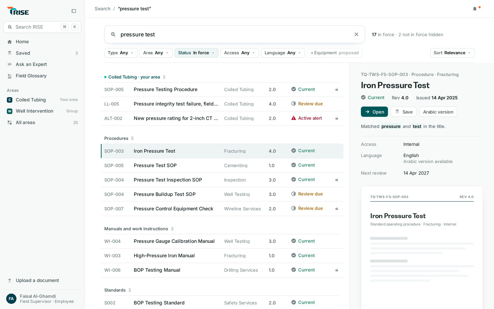
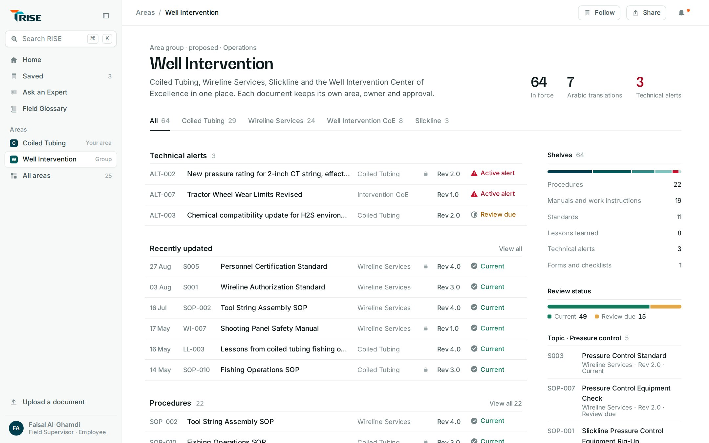
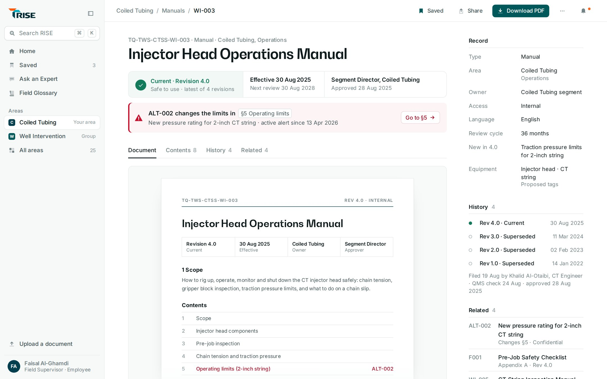

Round 7 · One direction
The core RISE web experience
Home, Search, Area and Document designed as one product at 1440 × 900, with one navigation system for every role. All content comes from the RISE register: Faisal Al-Ghamdi, Field Supervisor, Employee, home area Coiled Tubing. Nothing has changed in authorisation or document rules.
Design DNA
- Quiet chrome, content in charge. A light neutral sidebar and a thin top bar fade back so documents carry the screen. TAQA teal appears only on the selected item and the one primary action.
- Typography does the hierarchy. One large BW Gradual title per page; everything else is 13–14px Inter, separated by weight and grey level rather than boxes, sizes or colour.
- Lists before cards. Grouped rows with counts and fixed columns (date, code, title, area, revision, status) make every list scan the same way. Containers appear only where they group a warning or a preview.
- Every object gets a properties rail. Pages keep their main subject in a wide column and its facts in a 272px rail of label/value pairs, so details never compete with content.
- Trust as one line. The document opens with a single control strip, Current · Revision · Effective · Approver, readable in two seconds. Status is always a shape plus a word, never colour alone.
- Restraint as identity. Hairlines, generous rhythm and a consistent document-code column are what make RISE recognisable. Crimson marks safety only; orange lives only in the logo and one unread dot.
Home
The entrance leads with search, then the one safety change that affects Faisal’s work, then what changed in their area and what they were reading. The rail answers “my area, my saved, where to get help”. Browse areas sits below for wider exploration. There is no greeting and no KPI tiles.

Search · “pressure test”
A list-and-preview workspace: the query and filters on top, results grouped (their area first, then by type) on the left, and the selected document’s control facts and first page on the right. Rows stay one line, the same as on Home and Area.

Area · Well Intervention
A real destination: what it contains (four member areas as tabs), what needs attention, what changed, and the main shelves, with experts and a cross-area topic in the rail. Well Intervention is a proposed grouping and is labelled so. Maintenance bulletins show an honest empty state: the register defines the type but none are issued yet.

Document · WI-003
Title, type, area and the trust strip are answered before anything else, then the ALT-002 safety note, then the document itself. Record, history, related documents and the expert sit in the rail. Saved, Share and Download PDF live in the top bar where they are always reachable.

Responsive plan
Not designed for the phone yet; these are the rules each desktop region follows when it collapses.
| Sidebar | Becomes a bottom bar: Home, Search, Areas, Saved. Ask an Expert, Field Glossary and role tools move to a “More” sheet. The search field becomes the top of every screen. |
|---|---|
| Properties rail | Moves under the title as a collapsible “Record” section. Facts stay label/value; nothing is removed. |
| List rows | Code and title stay on line one; area, revision and status drop to line two. Status is never hidden. |
| Search preview | Tapping a result opens the document; the preview pane is a desktop convenience only. |
| Filters | Collapse into one “Filters” button with a sheet. The active filter count stays visible. |
| Trust strip | Stacks to three rows and stays first after the title. This is the one region that must always be visible. |
Self-review
Questions asked of the first pass, and what changed because of them.
| Does it still look like an AI dashboard? | No KPI tiles, no greeting and no card grid. The first pass had three boxed regions; they became hairline sections. |
|---|---|
| Too many cards? | Three containers are left on purpose: the safety note, the search preview and the document page. |
| Is the hierarchy obvious? | Yes on every screen: search, then safety, then your area’s changes. Title, then trust, then content. |
| Does typography do enough? | Mostly. The first pass truncated titles; the rail went from 296px to 272px and columns were tightened so titles read in full. |
| Would it hold without TAQA colours? | Yes. Structure, rhythm and the code column carry the identity; colour only marks selection, actions and safety. |
| Can a technician use it untrained? | Six plain destinations and one search field, and the same row pattern everywhere. The weak point is filter vocabulary, which needs testing with field users. |
Stopping here. Upload, QMS Workspace, the phone layouts and any implementation wait for your approval of this direction.